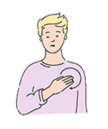
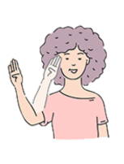
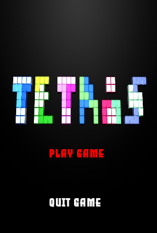
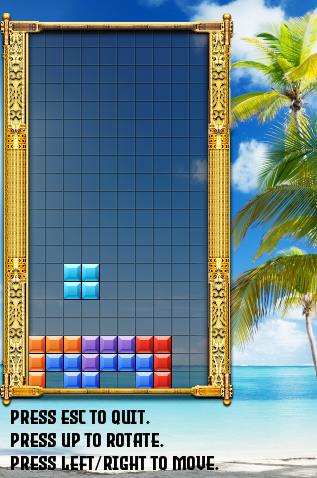
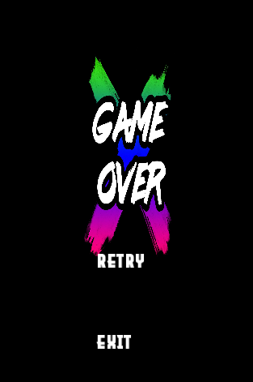

Personal Projects
ASL and Gesture Recognition




- In this project, we used hand coordinates to recognise American Sign Language (ASL) using open-source libraries:
- Opening of laptop camera using OpenCV API.
- Capturing of hand coordinate (refer to image above) using Mediapipe API.
- We also utilised the TI RTOS CC2650 SensorTag to capture hand gait movements. The sensors used are:
- Accelerometer.
- Gyroscope.
- The data captured are fed into a machine learning model for classification. The trained models are situated on a cloud server and data are transmitted over MQTT.
- A pre-recorded demonstration of me performing the various hand signs can be seen in this video below:
- Please find repository to the application hereLearn more.
Classical Tetris



- Used Simple and Fast Multimedia Library (SFML) to generate window, sprite and audio modules.
- The demonstration below show cases the gameplay for Tetris:
- Please find repository to Tetris Game hereLearn more.
Classical Race Car


- Used Simple and Fast Multimedia Library (SFML) to generate window, sprite and audio modules.
- The demonstration below show cases the gameplay for Race Car:
- Please find repository to Race Car Game hereLearn more.
Web Design

- Picked up as a hobby as I wanted to create a website that I can call my own.
- Used Hypertext Markup Language (HTML) and Cascading Stylesheet (CSS) to format the webpage.
- Used Javascript to render the terminal and toggle between dark and light modes.
- Please find repository to the webpage hereLearn more.